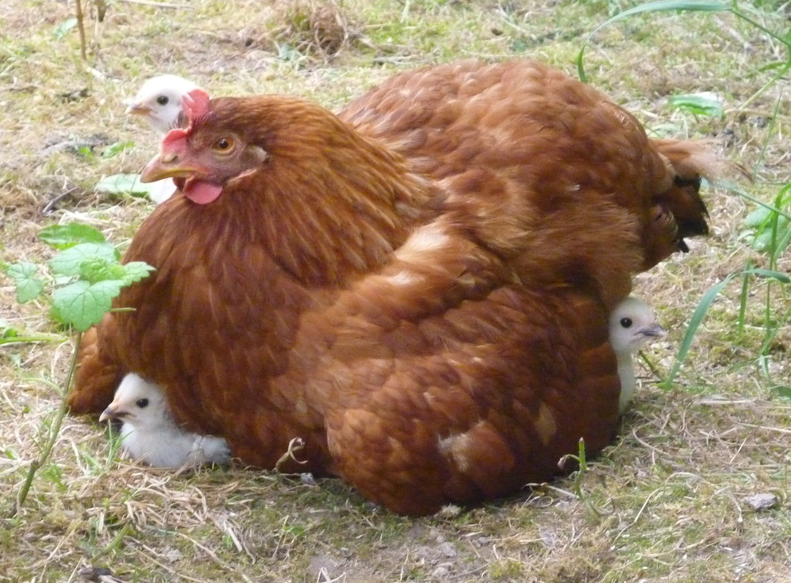

A galinha caipira é uma ave muito comum em sitios e cooperativas rurais, como a nossa. Ela é criada solta, se alimenta de milho e restos de comida, e é conhecida por dar ovos de casca mais forte. Alem dos ovos, a galinha caipira também é criada para o corte, sendo parte importante da economia de pequenos produtores.